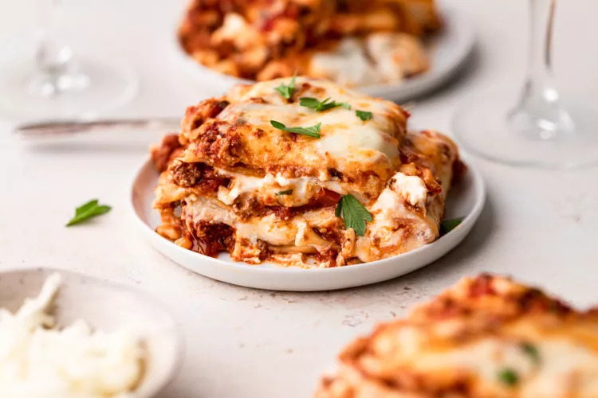

The Best Homemade Lasagna

Description
This classic lasagna recipe is made with an easy meat sauce as the base.
Layer the sauce with noodles and cheese, then bake until bubbly!
This is great for feeding a big family and freezes well, too.
Ingredients
For the meat sauce:
2 teaspoons extra virgin olive oil
1 pound ground beef chuck
1/2 medium onion, diced (about 3/4 cup)
1/2 large bell pepper (green, red, or yellow), diced (about 3/4 cup)
2 cloves garlic, minced
1 (28-ounce)can good-quality tomato sauce
3 ounces tomato paste (half a 6-ounce can)
1 (14 ounce) can crushed tomatoes
2 tablespoons chopped fresh oregano, or 2 teaspoons dried oregano
1/4 cup chopped fresh parsley (preferably flat leaf), packed
1 tablespoon Italian seasoning
1 pinch garlic powder and/or garlic salt
1 tablespoon red or white wine vinegar
1 tablespoon to 1/4 cup sugar (to taste, optional)
Salt